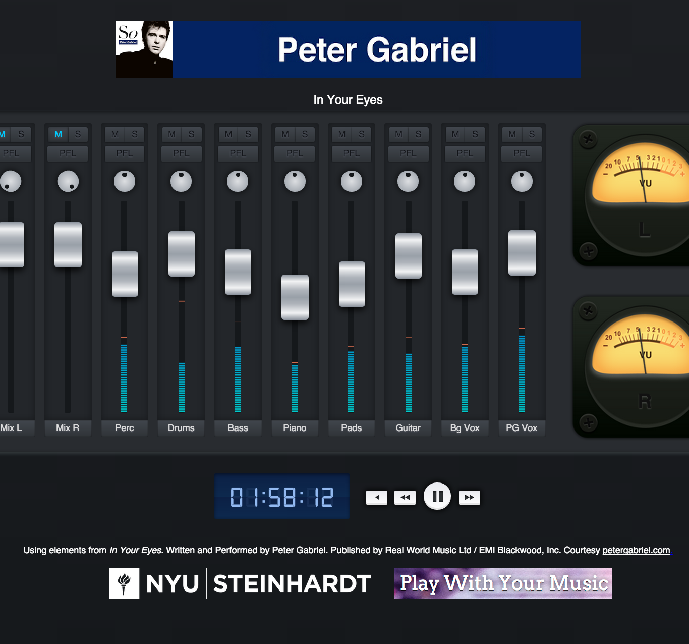
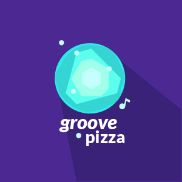
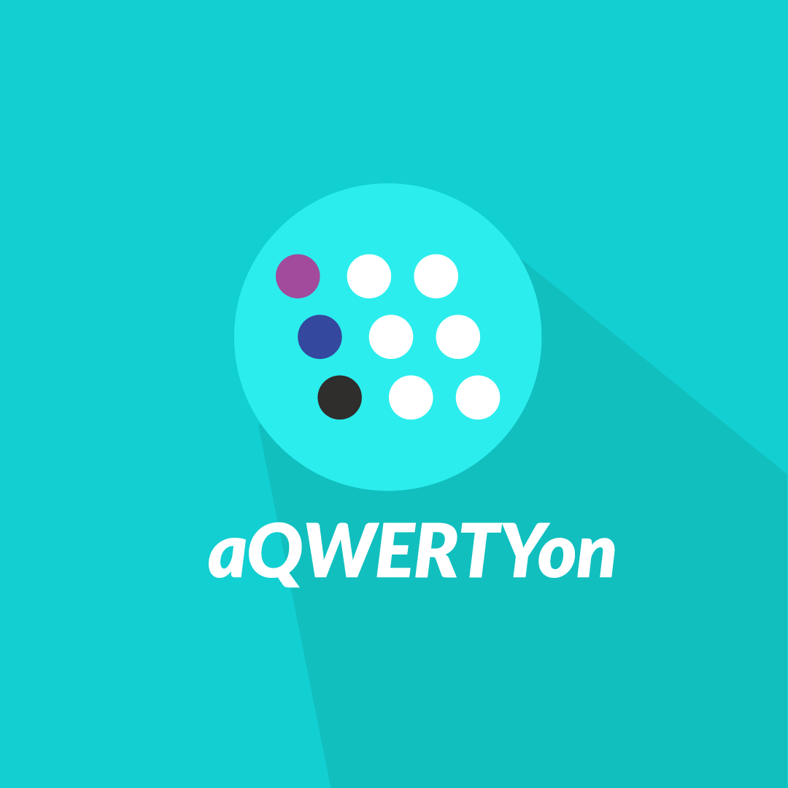
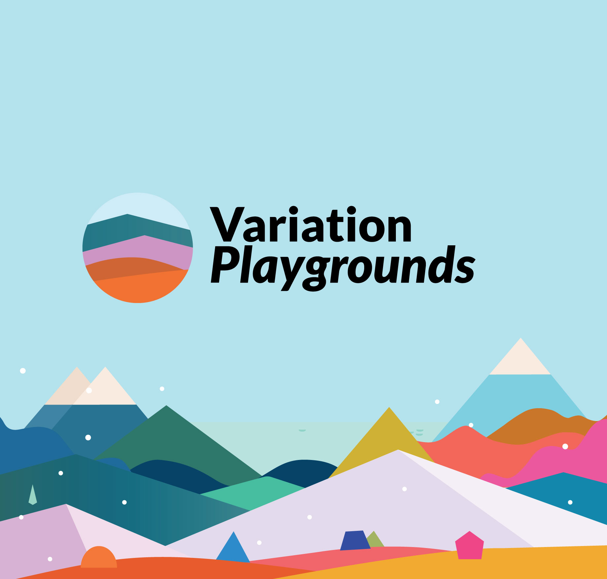
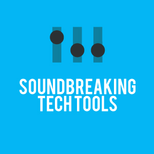
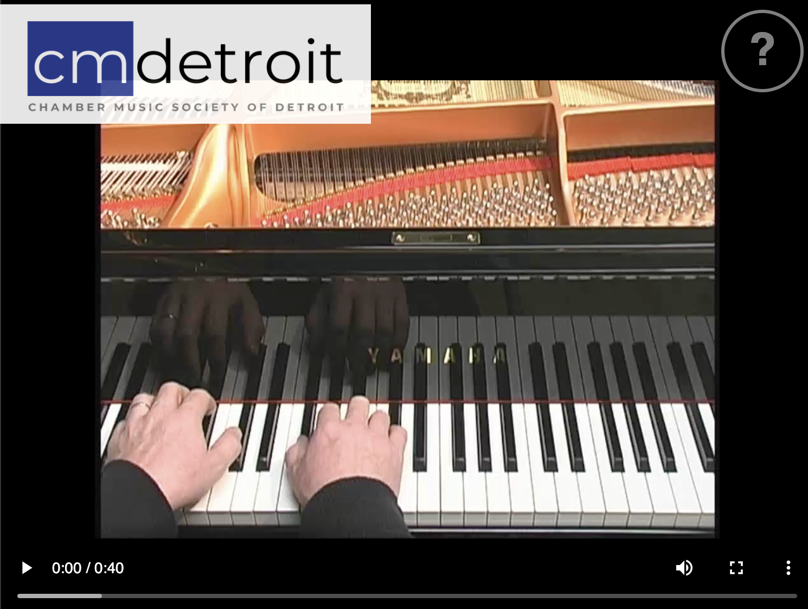
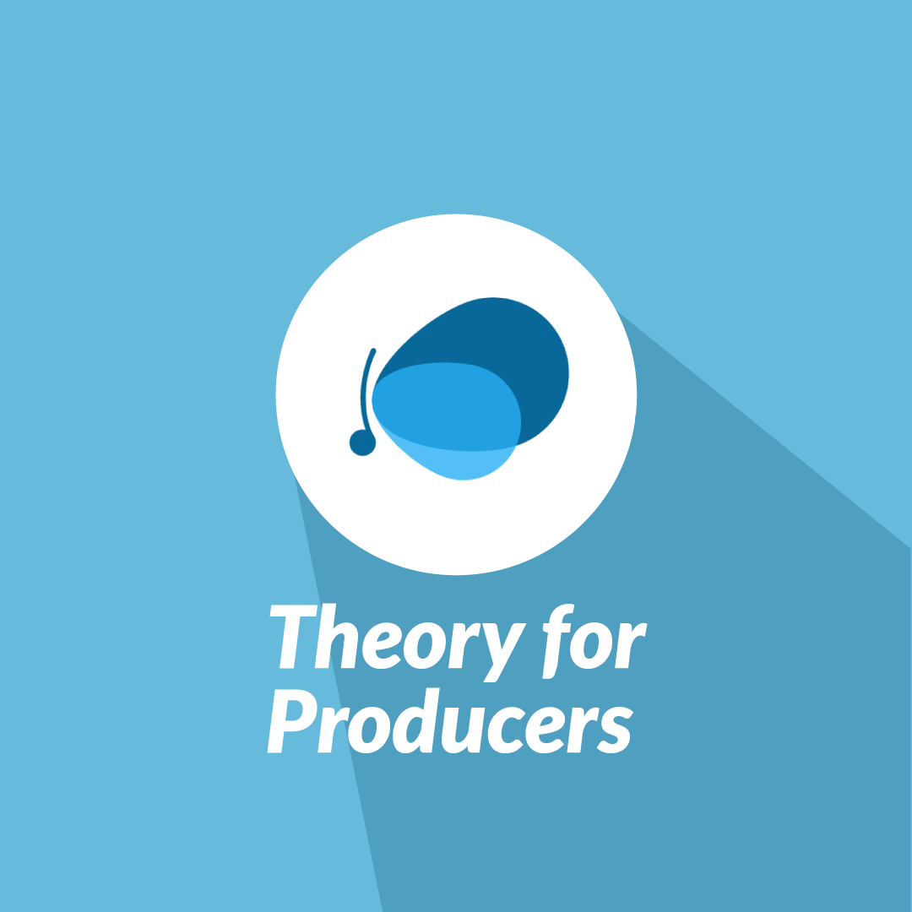
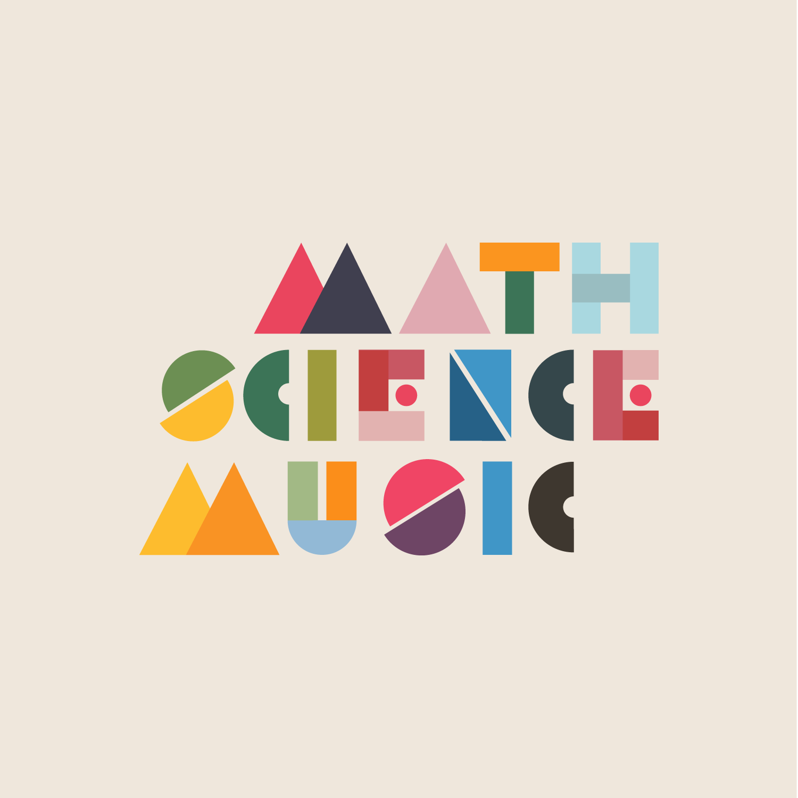
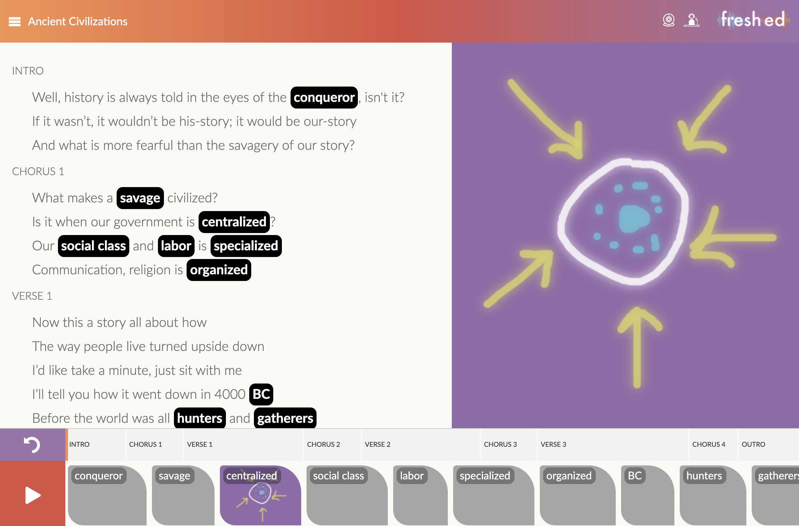
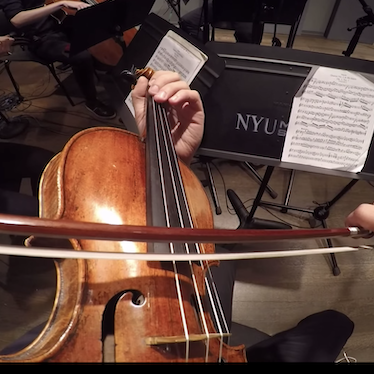

Musical participation
Groove Pizza
Make a rhythm. See its shape. Explore the ideas and people behind a musical playground.
Play & read the storyNYU Shanghai / Music Experience Design Lab
Led by S. Alex Ruthmann, with collaborators worldwide. We design and study new ways to make, experience and learn music.
Musical participation
Make a rhythm. See its shape. Explore the ideas and people behind a musical playground.
Play & read the storyListening & experience
Step inside recordings, move between perspectives, and discover a history of spatial listening.
Explore the experiencesActive research & development
AI, practice and musical judgment. Designing tools for the person who is learning.
Read the research direction
Learn production with Peter Gabriel & Clara Berry.

Rhythm through shapes, dots and angles.

Melody and harmony on your keyboard.

Musical playgrounds for orchestral music.

Explore the tools behind recorded music.

Improvise with Steve Wogaman. Save your phrases.

Creative music theory with Soundfly.

Interactive learning across three disciplines.

Hip-hop, remixing and annotation.

Hear the Aeolus Quartet from inside the music.
Learn the creative processes of audio engineers and producers through the music of Peter Gabriel & Clara Berry.
Create & play with rhythmic grooves through shapes, dots, and angles. Export to audio, MIDI, and music notation.
Create and improvise melodies and harmonies using your computer keyboard. Explore music theory.
Musical Playgrounds for orchestral music created in collaboration with the New York Philharmonic and Detroit Symphony Orchestra.
Explore the tools used by audio engineers created in partnership with the Rock and Roll Forever Foundation, TeachRock, and Soundbreaking.org.
Improvise with Steve Wogaman of the Chamber Music Society of Detroit. Track your melodies as piano rolls, save and name phrases in your browser, and replay, export or import melody JSON files.
Explore music theory using our creative tools created in partnership with Soundfly.com.
Interactive learning materials integrating Math, Science, and Music in partnership with the Herbie Hancock Insitute of Jazz.
Explore middle school history through interactive hip-hop remixing and annotation.
Experience the Aeolus String Quartet from the performers' perspectives.
Virtual Piano Duet saves melodies in this browser. Export a file to keep or transfer them; no cloud sync or microphone recording. Features & details → Original version ↗
The ideas have a history
Recovered pages from Alex Ruthmann’s Michigan website document intonation tools, electronic performance interfaces, composition and musical experiments.
Michigan collection — awaiting verificationWe welcome collaborators in China and around the world to explore music, learning and creative technology.
You can browse without optional Google Analytics. Videos and other embeds load only when you click them.